Man Tecnico:Valutazioni
Analisi dei requisiti
Il processo di programmazione e controllo si conclude con la valutazione della performance individuale. Tale fase del processo viene attuata mediante l’utilizzo della scheda di valutazione, tramite la quale ogni dipendente dell’ATS riceve una valutazione (punteggio) frutto della somma pesata dei punteggi delle sezioni di valutazione definite in fase di accordo sindacale. Attualmente, le sezioni di valutazione previste sono quelle relative alla performance organizzativa ed alla performance individuale. Mediante la scheda viene valutato tutto il personale ad esclusione dei Direttori o dei dipendenti che non posseggono i requisiti per essere valutati (ad es. il personale in lunga assenza per l’intero anno di budget).
Ogni scheda di valutazione viene compilata da un solo valutatore, identificato nel responsabile del CdR di afferenza del dipendente oppure, nel caso in cui il valutato sia a sua volta Responsabile di CdR, dal responsabile del CdR Padre. In caso di assegnazione del dipendente a più CdR il valutatore deve poter essere scelto dal CdG in modo arbitrario fra i responsabili dei CdR di afferenza. In ogni momento della valutazione dovrà essere possibile per il CdG riassegnare il valutatore ad un singolo valutato.
La scheda di valutazione sarà differente per ogni categoria di valutato che identificherà gli ambiti oggetto di valutazione e verrà determinata in funzione al proprio stato di servizio. Le categorie (tipologie di scheda) saranno gestite in maniera arbitraria e saranno categorizzate fra tipologie di tipo comparto e di tipo dirigenza. Nasce quindi la necessità di definire gli ambiti di valutazione che rappresentano dimensioni specifiche che vengono valutate con metodi differenti e che contribuiscono in maniera pesata a comporre la valutazione finale. Gli ambiti di valutazione sono raggruppati in sezioni (macro dimensioni, nell’esempio dell’ATS: performance organizzativa e individuale, ma che potranno essere definite in maniera personalizzata per ogni anno) e possono essere considerati per la valutazione di ogni singola categoria. Sarà quindi necessario definire per ogni anno di budget quali saranno gli ambiti disponibili e definirne la pesatura, l’associazione alle categorie ed il metodo di valutazione per ognuno di essi. Il metodo di valutazione definirà le modalità di inserimento dei dati e di calcolo del risultato.
Durante l’anno di budget dovrà risultare possibile effettuare valutazioni intermedie a discrezione del CdG, ognuna delle quale potrà essere aperta per periodi in numero e durata arbitraria. Per ogni periodo di valutazione sarà possibile inoltre definire una valutazione personalizzata, rendendo disponibile la compilazione solo ad alcune categorie o limitatamente ad alcuni ambiti di valutazione. Sarà infine possibile definire per ogni periodo di valutazione la possibilità per il valutato di procedere ad una autovalutazione e determinare quali saranno gli ambiti oggetto della stessa.
Una volta configurato il periodo verranno create le schede di valutazione per ogni dipendente in servizio, definendo automaticamente il responsabile e la tipologia di valutazione in base all’assegnazione del dipendente al CDC ed allo stato di carriera validi per il periodo. Sarà quindi necessario avere a disposizione un elenco di schede create per il periodo con la possibilità di visualizzarle ed uno dei dipendenti per i quali non è ancora stata generata una scheda.
Ogni dipende potrà, per ogni periodo di valutazione, visualizzare le schede di valutazione per le quali risulta essere un valutatore oppure un valutato, con le informazioni relative allo stato di avanzamento della valutazione.
La compilazione delle schede verrà effettuata a fasi:
- Compilazione dell’eventuale autovalutazione
- Compilazione della valutazione da parte del valutatore
- Presa visione da parte del valutato
Per le fasi 2 e 3, indipendentemente dagli ambiti attivi per la scheda, il valutatore e il valutato potranno sempre compilare delle note specifiche per il proprio ruolo. La scheda potrà essere compilata/visualizzata in base al ruolo dell’utente e allo stato di avanzamento della valutazione. Sarà possibile inoltre creare un pdf per la scheda di valutazione compilata.
I metodi di valutazione degli ambiti previsti attualmente sono due ma dovrà essere garantita la possibilità di introdurne di nuovi lato programmazione, occorre quindi prevedere un sistema flessibile in questo senso. I due metodi previsti attualmente sono l’inserimento di un valore per l’ambito da parte dell’amministratore oppure la compilazione di un questionario di valutazione da parte del valutatore. In quest’ultimo caso la scheda dovrà presentare alcuni item, raggruppati in aree, per i quali il valutatore potrà esprimere un punteggio tramite la selezione da un insieme di valori discreti caratterizzati da descrizione e punteggio numerico. Sarà possibile definire per ogni anno gli item e le aree di raggruppamento ed i punteggi relativi, nonché le categorie per le quali quell’item è valido. Ad esempio per lo stesso ambito è possibile che un dirigente o un dipendente del comparto, o più in generale qualsiasi tipologia definita, visualizzi item differenti.
La scheda di valutazione è suddivisa in sezioni. Le sezioni sono codificate tramite una tabella di supporto, così formata:
- ID
- Codice
- Descrizione
Ciascuna sezione ha un peso: il peso indica il contributo della sezione alla valutazione totale.
Ciascuna sezione raggruppa al suo interno uno o più ambiti, a seconda degli accordi di cui sopra: gli ambiti devono poter essere storicizzati nel tempo per far fronte alla dinamicità della scheda. Gli ambiti sono codificati tramite una tabella di supporto, così formata:
- ID
- Codice
- Descrizione
- Anno inizio
- Anno fine
- ID sezione (identificativo della sezione raggruppante l’ambito)
Le sezioni sprovviste di ambiti non verranno valutate e non verranno prese in considerazione durante la creazione della scheda di valutazione; ogni periodo di valutazione può essere configurato in maniera diversa dal precedente, mantenendo comunque la persistenza dei dati già inseriti e già validati dalle parti in causa.
Le categorie sono codificate tramite una tabella di supporto, così formata:
- ID
- Abbreviazione
- Descrizione
- Dirigenza
- Anno inizio
- Anno fine
Le aree item sono codificate tramite una tabella di supporto, così formata:
- ID
- Descrizione
- ID ambito di riferimento
- Ordine visualizzazione
Gli item sono codificati tramite una tabella di supporto, così formata:
- ID
- Nome
- Descrizione
- Peso
- Anno introduzione
- Anno esclusione
- ID area item di riferimento
- Ordine visualizzazione
Il raggiungimento della valutazione prevede il raggiungimento dei totali ed ogni totale può considerare solo alcuni ambiti.
I totali sono codificati tramite una tabella di supporto, così formata
- ID
- Descrizione
- Anno_inizio
- Anno_fine
- Ordine_visualizzazione
Per l’ATS, la scheda di valutazione è chiusa una volta che è stata firmata dal Valutatore, indipendentemente dalla firma per presa visione apposta dal Valutato
Calcolo raggiungimento
E' importante riassumere di seguito la struttura della scheda di valutazione e le modalità di calcolo del punteggio della stessa. Le schede di valutazioni sono suddivise in sezioni e ambiti per le quali per ogni anno di budget vengono definiti i pesi. Per ogni periodo di valutazione poi è possibile prevedere che solo alcuni ambiti possano essere valutati per una tipologia di scheda specifica. Infine la scheda può prevedere uno o più totali, ognuno dei quali coinvolto da ambiti differenti. Ogni ambito è calcolato con un metodo di valutazione, per ora sono previste due metodologie, una che prevede l’inserimento/importazione da parte dell’amministratore una che prevede un sistema ad item. Ognuno dei due metodi contribuisce al calcolo del raggiungimento dell’ambito in maniera differente. Per il metodo di inserimento da amministratore l’ambito prevede un solo valore che costituisce il totale dell’ambito. Considerando il caso più complesso della metodologia ad item viene ricostruito il processo di calcolo dell’ambito. Gli item sono suddivisi in aree sulle quali ognuno di essi può avere un peso differente ed è definito da un insieme discreto di valori chiamati punteggi, caratterizzati da un valore numerico e una descrizione qualitativa. Il raggiungimento di un item viene calcolato come:
[peso item]*[punteggio item]/[punteggio massimo item].Il raggiungimento dell’area item viene calcolato come:
[somma raggiungimenti item area]/[somma pesi item area].Il totale dell’ambito viene calcolato pesando il raggiungimento delle varie aree rispetto al peso totale delle aree:
Somma([raggiungimento area])*([peso area]/[peso totale aree ambito])Il totale sull’ambito (calcolato con qualsiasi metodo) viene poi pesato:
[raggiungimento ambito]*[peso ambito]Infine per il raggiungimento totale della valutazione vengono calcolati i raggiungimenti delle sezioni pesati:
[totale raggiungimento ambiti sezione]*([peso sezione]/[totale peso ambiti])Ovviamente per ogni valutazione vengono considerati solamente gli ambiti previsti per anno / periodo / totale.
Amministratore
Alla luce delle considerazioni fatte l’utente amministratore della scheda avrà la possibilità di gestirne le configurazioni tramite funzionalità specifiche:
- Sezioni ed ambiti (con gestione interna del peso della sezione)
- Categorie
- Peso categoria nell’ambito
- Aree item
- Item
- Totali (con gestione interna dei totali della categoria e dei totali dell’ambito)
- Estrazione in formato PDF delle schede compilate
Cruscotto
Verrà fornito come strumento di sintesi un cruscotto per la visualizzazione dello stato d’avanzamento delle valutazioni, sia a livello aziendale che a livello di CdR. I CdR da monitorare nel cruscotto potranno essere scelti arbitrariamente dal CdG per ogni anno di budget. Lo stato di avanzamento verrà visualizzato presentando la situazione complessiva delle valutazioni sia considerando la differenziazione fra le tipologie di tipo comparto che quelle di tipo dirigenza.
Descrizione delle funzionalità
La sezione “Valutazione” è raggiungibile attraverso l’apposita voce di menu
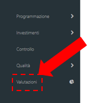
Una volta effettuato l’accesso saranno mostrate le seguenti sezioni:
- Schede di valutazione con Ruolo Valutato (visibile a tutti i dipendenti): in questa sezione è riportata una sintesi relativa alla propria valutazione per il periodo selezionato;
- Schede di valutazione con Ruolo Valutatore (visibile solo ai valutatori): in questa sezione viene riportato l’elenco del personale assegnato all’utente loggato, e le relative informazioni e valutazioni.
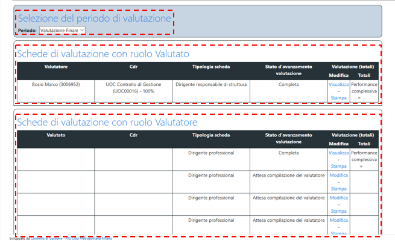
Entrambe le sezioni della scheda mostrano in sintesi le valutazioni attive per il periodo selezionato; nelle tabelle vengono riportate le seguenti informazioni:
- Nominativo e matricola del proprio valutatore / dei propri valutati;
- il Centro di Responsabilità (CdR) di afferenza;
- la tipologia di scheda di valutazione (definita sulla base del profilo e livello di responsabilità all’interno dell’organizzazione);
- lo stato d’avanzamento della valutazione (“attesa compilazione da parte del valutatore” / “Attesa presa visione del valutato” / “Completa”);
- Valutazione (totali) – questa colonna indica i totali della valutazione ottenuta e, a seconda dello stato d’avanzamento della valutazione, sarà presente il tasto “Modifica” che consente di accedere al dettaglio della valutazione, oppure il tasto “visualizza” che consente di visualizzare il dettaglio della valutazione effettuata
Ruolo Valutato (visible a tutti i dipendenti)
Per accedere alla propria scheda di valutazione il valutato dovrà cliccare sull'apposito link "Presa visione della valutazione"; sarà inoltre possibile stampare in pdf la propria scheda mediante il link "Stampa"
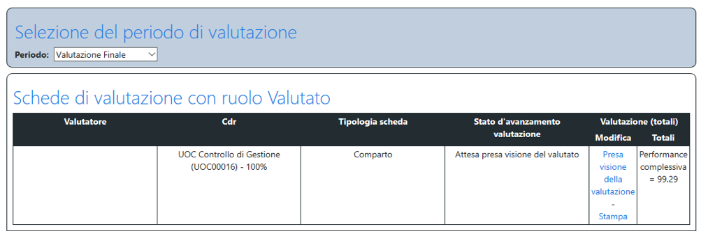
La scheda di valutazione individuale è suddivisa in quattro sezioni:
Intestazione: contiene le informazioni relative al valutato (Nome e matricola, Tipologia di Scheda di Valutazione)
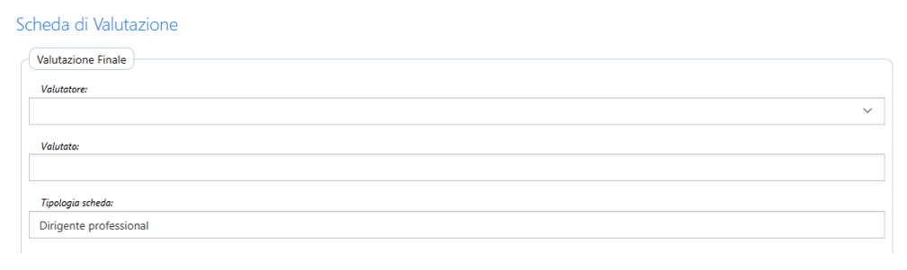
Performance Organizzativa: contiene il punteggio degli obiettivi relativi all’anno preso in esame ottenuto dal CdR
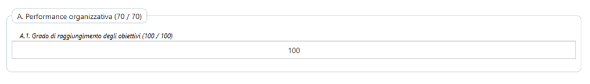
Performance Individuale: contiene gli Items oggetto di valutazione che sono raggruppati in “Aree”, ciascuna “Area” afferisce ad un determinato “Ambito” e gli “ambiti” compongono le diverse “Sezioni” della valutazione. Ciascun Item è definito da una descrizione di sintesi ed un descrittore, e viene valutato mediante la selezione di uno dei valori della scala di punteggi così come definito dagli accordi sindacali vigenti
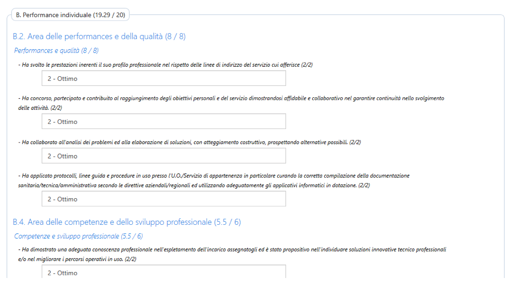
Note:
- Valutatore: contiene eventuali note inserite dal valutatore a corredo della valutazione e l’eventuale “data ultimo colloquio con il valutato”.
- Valutato: tale sezione consente l’inserimento di eventuali note da parte del valutato
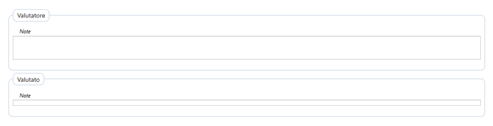
Presa visione della scheda di valutazione individuale
A ciascun dipendente è richiesto di procedere alla “firma per presa visione” della propria scheda di valutazione cliccando sull’apposito pulsante posto in calce alla pagina di dettaglio della valutazione
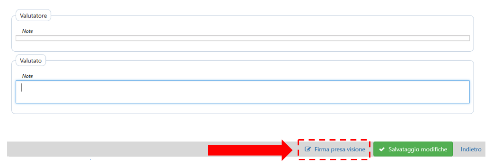
Ruolo Valutatore (visibile solo ai valutatori)
Per accedere alle schede di valutazione dei dipendenti afferenti al proprio CdR il valutatore dovrà cliccare, in corrispondenza del nominativo del dipendente, sul link "Modifica" in modo da accede al dettaglio della scheda individuale
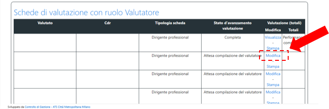
La scheda di valutazione individuale è suddivisa in quattro sezioni:
Intestazione: contiene le informazioni relative al valutato (Nome e matricola, Tipologia di Scheda di Valutazione)
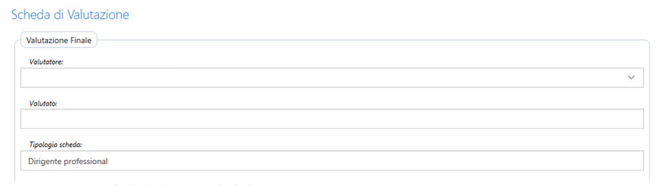
Performance Organizzativa: contiene il punteggio degli obiettivi relativi all’anno preso in esame ottenuto dal CdR
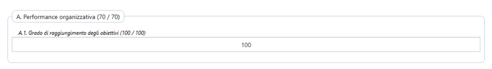
Performance Individuale: contiene gli Items oggetto di valutazione che sono raggruppati in “Aree”, ciascuna “Area” afferisce ad un determinato “Ambito” e gli “ambiti” compongono le diverse “Sezioni” della valutazione. Ciascun Item è definito da una descrizione di sintesi ed un descrittore, e viene valutato mediante la selezione di uno dei valori della scala di punteggi così come definito dagli accordi sindacali vigenti
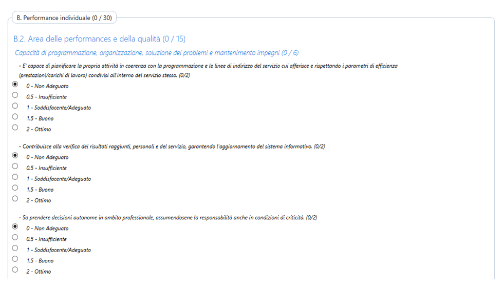
Note:
- Valutatore: contiene eventuali note inserite dal valutatore a corredo della valutazione e l’eventuale “data ultimo colloquio con il valutato”.
- Valutato: tale sezione consente l’inserimento di eventuali note da parte del valutato
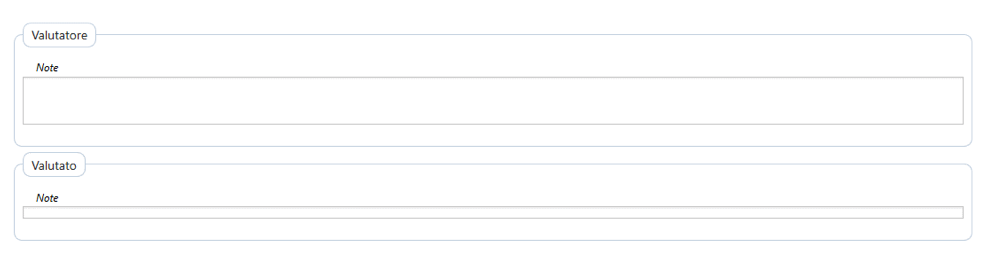
Chiusura Valutazione
Una volta compilata la scheda di valutazione in ogni sua parte sarà necessario procedere alla chiusura della stessa attraverso l’apposito tasto “Firma Valutatore”; in tal modo la scheda passerà allo stato successivo (“Attesa presa visione del valutato”) e non sarà più modificabile (se non a seguito di riapertura della scheda da parte dell’amministratore). È comunque possibile procedere anche al salvataggio parziale della scheda, cliccando sull’apposito pulsante a fondo pagina “Salvataggio modifiche/ricalcolo totali”, al fine di riprendere la compilazione della stessa in un secondo momento.
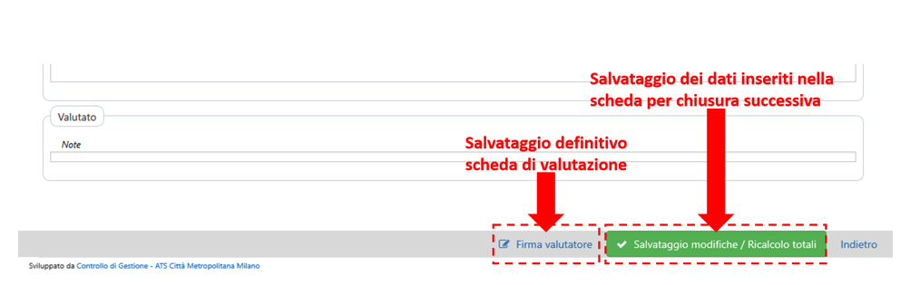
Cruscotto Valutazioni
Il “Cruscotto valutazioni”, a disposizione di tutti gli utenti della Piattaforma, consente di visualizzare report di sintesi circa l’andamento delle valutazioni all’interno dell’Azienda. L’accesso al cruscotto si effettua cliccando sul pulsante “Grafico a torta” di fianco alla voce di menu “Valutazioni” (Figura 1).
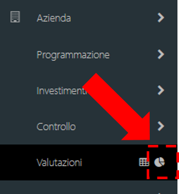
All’interno della pagina, filtrabile in alto per periodo di valutazione, sono presenti tre report (selezionabili mediante i relativi TAB) che consentono di visualizzare tre report differenti (Figura 2)
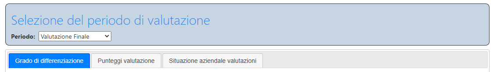
Grado di differenziazione
Report filtrabile per Qualifica e Tipologia scheda che rappresenta, in un grafico a torta, la differenziazione nell’assegnazione dei punteggi mediante fasce definite dall’amministratore di sistema. (Figura 3)
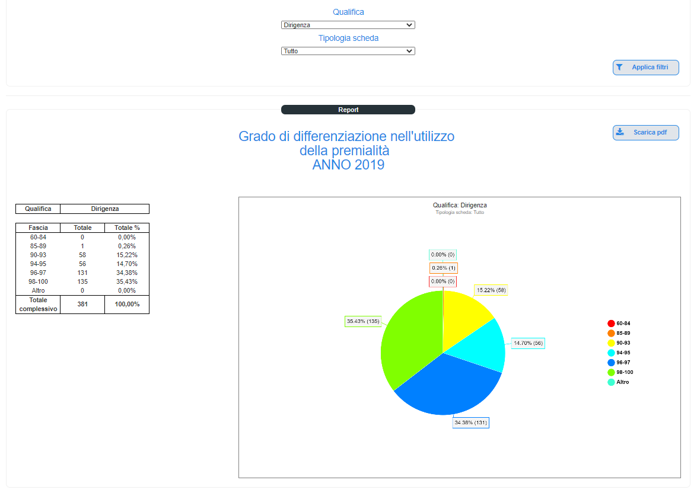
Punteggi Valutazione
Report di sintesi, filtrabile per CdR, Qualifica, Tipologia Scheda e Area che rappresenta, mediante un grafico a dispersione il numero dei valutati in relazione alle percentuali di raggiungimento (Figura 4)
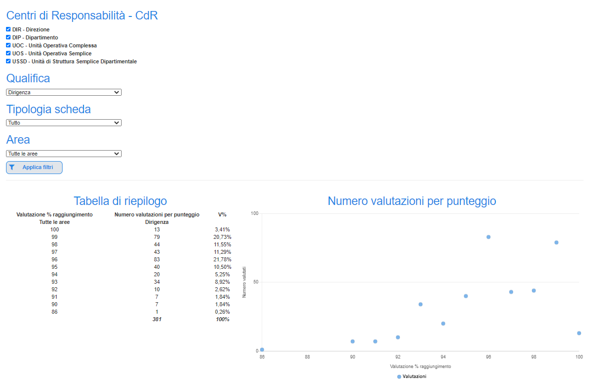
Situazione aziendale valutazioni
Report di sintesi che rappresenta lo stato delle valutazioni Aziendali con dettaglio sui CdR di primo livello (Dipartimenti - Strutture in Staff alle Direzioni)
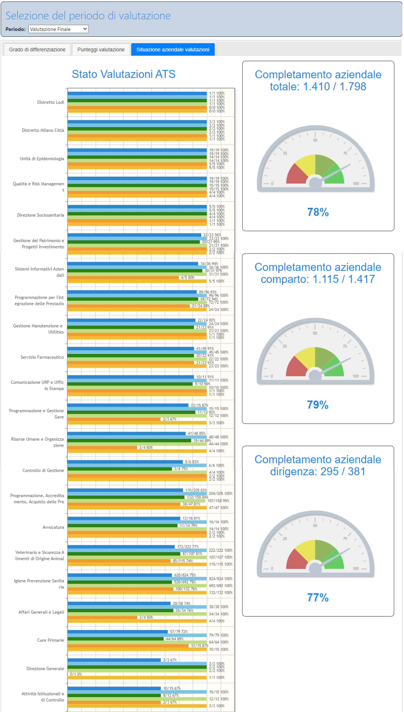
Strumenti di amministrazione – configurazione della scheda di valutazione
Sono presenti degli strumenti di amministrazione (visibili solo all’amministratore di sistema) che consentono:
- la configurazione delle schede di valutazione
- l’apertura delle schede di valutazione ad inizio periodo
- il ricalcolo dei totali o dei singoli ambiti e l’eliminazione di schede già aperte
- l’estrazione in formato Excel dello stato avanzamento valutazioni e dei punteggi assegnati dai valutatori e l’estrazione in formato .pdf di tutte le schede del periodo
- la configurazione delle fasce del report presente all’interno del “Cruscotto Valutazioni”
L’accesso agli strumenti di amministrazione si effettua cliccando sull’icona “Tabella” presente di fianco la voce di menù “Valutazioni”
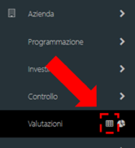
TAB Periodi
Il primo TAB attivo presente all’apertura della pagina di amministrazione è quello denominato “Periodi”; all’interno di questa pagina sono visibili i periodi di valutazione attivi con le relative date di apertura (inizio) e chiusura (fine) oltre ad ulteriori informazioni circa la visibilità o meno, all’interno delle schede di valutazione dei Totali, degli Ambiti e della data colloquio.
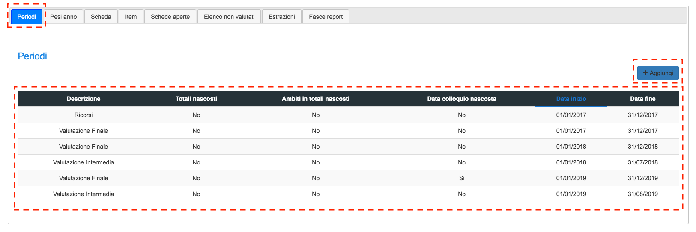
Cliccando sul pulsante “+ Aggiungi” sarà possibile creare un nuovo periodo di valutazione compilando i campi richiesta dalla maschera
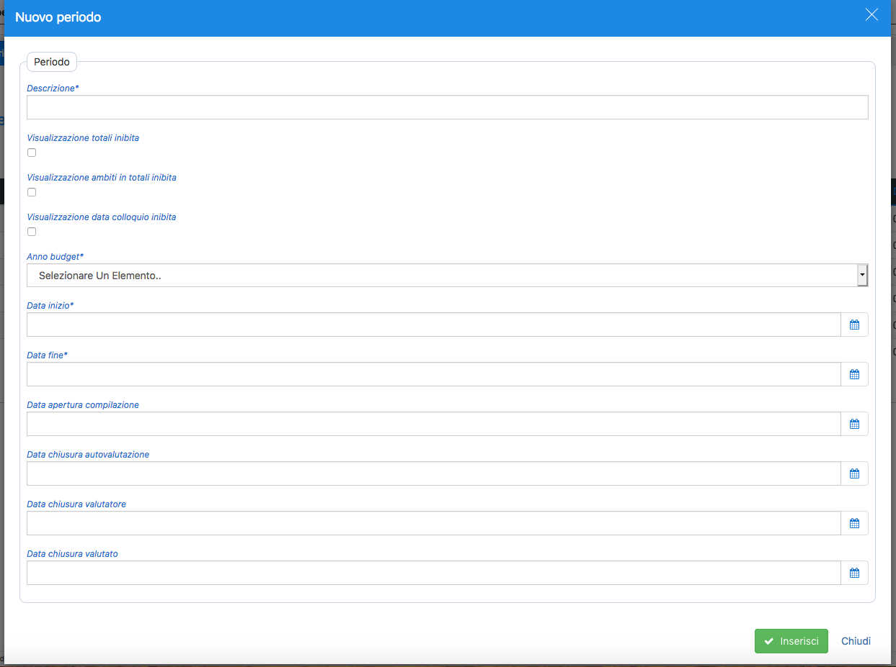
TAB Pesi Anno
Il secondo tab – Pesi Anno – consente all’amministratore di definire i pesi delle diverse sezioni delle schede e degli ambiti di valutazione attivi per l’anno di budget oltre che la metodologia di inserimento dei risultati (inserimento manuale; items; obiettivi).
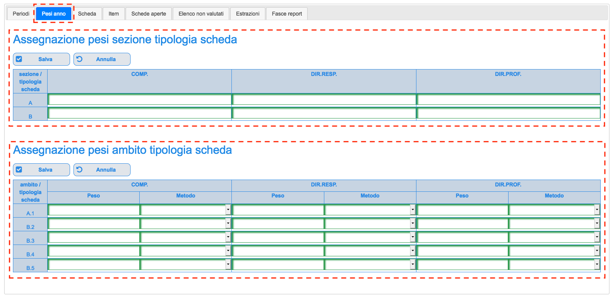
TAB Scheda
Il TAB “Scheda” consente all’amministratore di configurare la scheda di valutazione definendo:
Le sezioni presenti all’interno della scheda
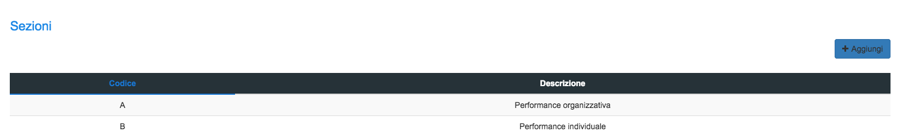
Gli ambiti di valutazione che compongono ciascuna sezione precedentemente creata
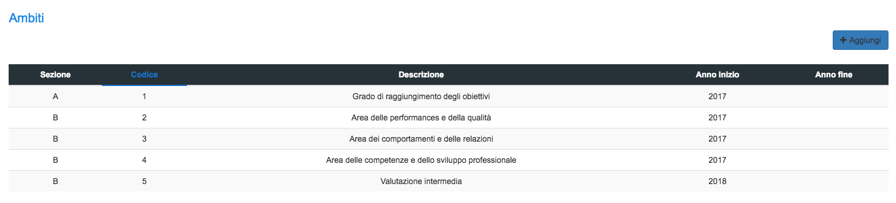
Le diverse tipologie di schede di valutazione presenti
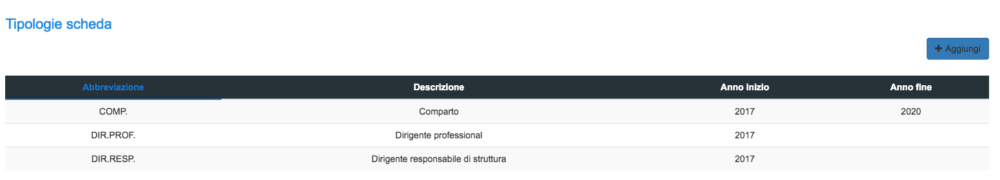
Ed infine definire come vengono calcolati i totali delle diverse tipologie di schede di valutazione indicando quali sono gli ambiti che ciascuna deve considerare
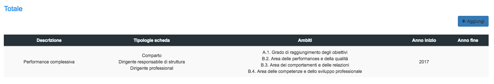
TAB Item
All’interno della pagina raggiungibile attraverso il “TAB Item” l’amministratore potrà visualizzare le “Aree Item” di valutazione presenti e il collegamento con gli ambiti
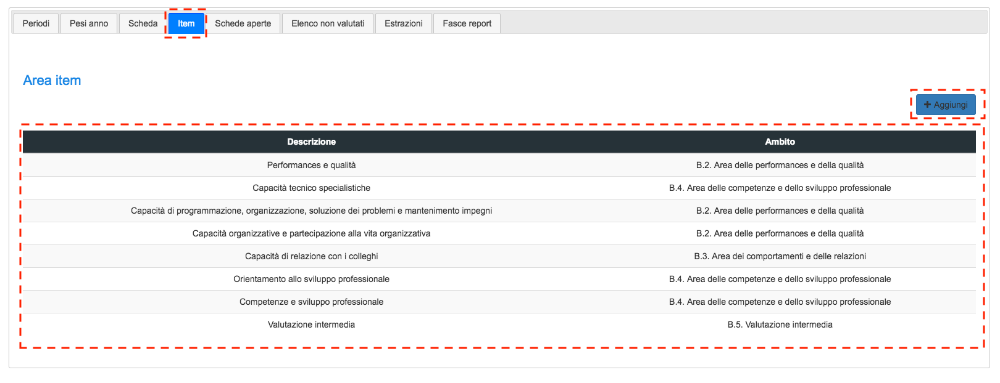
Cliccando sul pulsante “+ Aggiungi” sarà possibile creare una nuova Area e definirne il collegamento con uno degli ambiti precedentemente creati (vedi TAB Scheda)
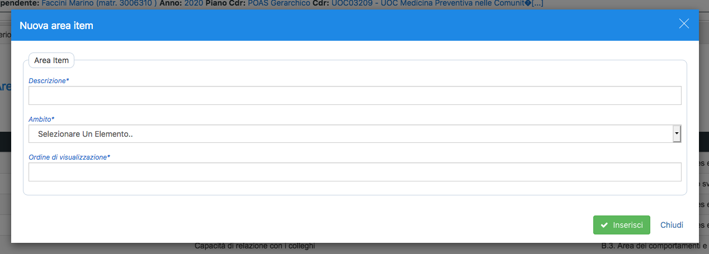
Una volta creata una nuova Area bisognerà cliccare sulla corrispondente riga per poter definire i singoli item di valutazione con relativi pesi presenti all’interno della stessa; questi appariranno all’interno della scheda di valutazione e saranno oggetto di selezione da parte del valutatore.
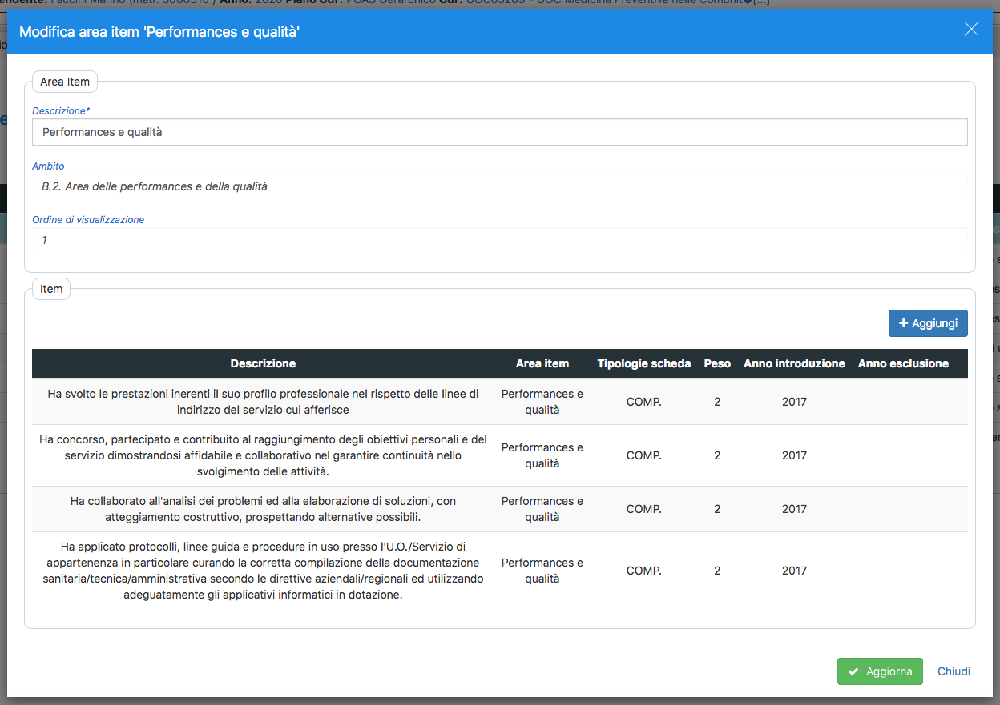
TAB Schede Aperte
Attraverso la pagina raggiungibile mediante il “TAB Schede Aperte” l’amministratore avrà la possibilità di visionare tutte l schede aperte per il periodo selezionato tramite l’apposito menù a tendina. Potrà inoltre ricalcolare i totali e gli ambiti mediante gli appositi pulsanti La scheda “Schede Aperte” inoltre consente la visualizzazione, la stampa o l’eliminazione di singole schede
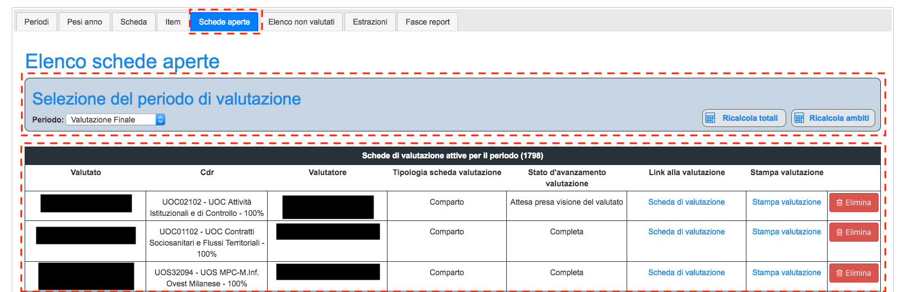
TAB Elenco non Valutati
Nella sezione “Elenco non valutati” saranno visibili tutti i dipendenti che non hanno una scheda di valutazione attiva per il periodo selezionato. In rosso saranno evidenziate le anomalie. Ad inizio della fase di valutazione tutti i dipendenti azienda saranno presenti in questo elenco; da qui, mediante l’apposito pulsante “Apertura schede valutazioni” sarà possibile procedere all’apertura massiva delle schede per tutti i dipendenti selezionati
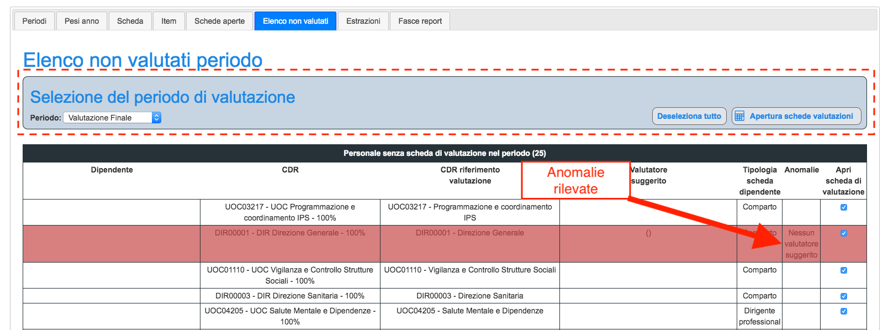
TAB Estrazioni
Tramite il “TAB Estrazioni” è possibile effettuare delle estrazioni dei dati relativi alla valutazione. E’ necessario selezionare il periodo di valutazione per cui si vogliono estrarre i dati e successivamente premere sul tasto corrispondente al tipo di estrazione desiderato.
- “Estrazione Excel avanzamento valutazioni” genera un file .xlsx con il seguente tracciato record
- “Estrazione Excel punteggi valutazioni” genera un file Excel contenente il dettaglio dei punteggi assegnati ad ogni singolo item per ogni valutato;
- “Estrazioni pdf di tutte le schede del periodo” genera un file compresso (.zip) contenente i PDF di tutte le schede del periodo.
ID valutazione – Periodo - Tipologia scheda - Matricola valutato - Cognome valutato - Nome valutato - Matricola valutatore - Cognome valutatore - Nome valutatore - Data chiusura autovalutazione - Data ultimo colloquio - Data firma valutatore - Note valutatore - Data firma valutato - Note valutato – Totale
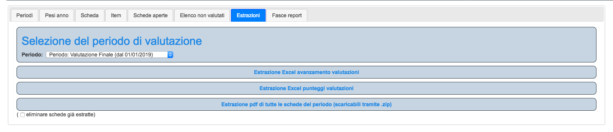
TAB Fasce Report
Tramite questa sezione è possibile impostare le fasce di punteggio necessarie per generare il report “Grado di differenziazione” (vedi capitolo precedente)
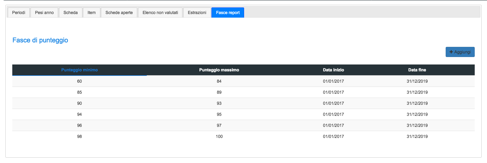
Scelte implementative
La funzionalità principale prevede un template personalizzato con un filtro sui periodi di valutazione dell'anno e l'elenco delle valutazioni per le quali l'utente selezionato risulta valutatore o valutato. Dall'elenco sarà possibile selezionare l'estrazione in PDF, generata dinamicamente, o la scheda di valutazione compilabile, costituita da un Record contenente ffFields generati automaticamente in base alla configurazione della scheda. Considerata la flessibilità della scheda di valutazione risulta oneroso calcolare il raggiungimento dei totali dinamicamente in elenchi contenenti molte valutazioni, operazione che genera un numero molto alto di query sul DB. Si è deciso di introdurre quindi un meccanismo di salvataggio di totali e ambiti precalcolati per poter poi recuperare i valori senza doverli ricalcolare ogni volta. Ad ogni salvataggio della scheda quindi verrà effettuata l'operazione di salvataggio di totali e ambiti precalcolati, operazione che dovrà poter essere fatta in maniera massiva anche dall'amministrazione del modulo. L'operazione da pannello di amministratore dovrà permettere all'utente di iniziare il salvataggio massivo di totali e ambiti e di poterlo interrompere in ogni momento, riprendeno l'operazione senza dover ricominciare ogni volta da capo, questo per poter garantire continuità e robustezza anche in caso di operazioni su un numero molto alto di valutazioni che potrebbero generare problemi di timeout del server. Per garantire questa possibilità viene garantita una marcatura temporale del ricalcolo dei totali e viene definito tramite un parametro del modulo l'offset temporale entro il quale il ricalcolo risulta ancora valido.
Il pannello di amministrazione, coerentemente con il resto dell'applicativo, viene gestito tramite una pagina unica suddivisa in tab, e presenta semplici CRUD implementati tramite ffGrid ed ffRecord, che permettono di gestire tutte le configurazioni e le entità coinvolte vincolando le operazioni rispetto a quanto definito in fase di analisi. Unica eccezione risulta essere la configurazione delle pesature e metodi di valutazione degli ambiti e delle sezioni nell'anno, implementata tramite un template personalizzato per la gestione della matrice. La matrice presenterà i dati in visualizzazione e ne permetterà la modifica direttamente all'interno delle celle, convertendole in campi input e salvando i valori inseriti, funzionalità garantita tramite codice jQuery personalizzato e chiamate ajax. E' importante inoltre sottolineare che le Grid e i Record dei CRUD avranno dei limiti sulle operazioni di modifica ed eliminazione coerenti con i vincoli sulle entità specificati in analisi, ad eccezione per le Grid nei tab della gestione scheda e dei periodi nei quali viene impedita direttamente l'eliminazione: questo per ottimizzare i tempi di caricamento senza appesantire la pagina con tutti i controlli a cascata sui vincoli per ogni record, considerando anche il fatto che l'eliminazione di record su queste tabelle di supporto riuslta utilizzata raramente e può essere comunque effettuata nel Record di dettaglio.
Il cruscotto di reportistica viene implementato tramite template personalizzati e le librerie jQPlot per la situazione aziendale e ChartJS per le fasce valutazioni e il report dei punteggi.
Per scelta implementativa l'eliminazione di una scheda di valutazione non viene propagata sulle valutazioni item e degli item collegati. Questo per permettere lato DB di mantenere comunque i dati inseriti per una scheda anche in caso di sua eliminazione. Non sarà possibile lato applicativo ripristinarli ma l'amministratore del DB potrà comunque in caso di emergenza recuperarli.
Modello ER
valutazioni_ambito (ID, codice, descrizione, anno_inizio, anno_fine, ID_sezione)
valutazioni_ambito_categoria_anno (ID, ID_ambito int(11), ID_categoria, ID_anno_budget, peso, metodo_valutazione)
valutazioni_ambito_precalcolato (ID, ID_ambito, ID_valutazione, valore, time_aggiornamento)
valutazioni_area_item (ID, descrizione, ID_ambito, ordine_visualizzazione)
valutazioni_categoria (ID, abbreviazione, descrizione, dirigenza, formula_appartenenza_personale, anno_inizio, anno_fine)
valutazioni_cdr_cruscotto (ID, codice_cdr, anno_inizio, anno_fine)
valutazioni_fascia_punteggio (ID, min, max, colore, data_inizio, data_fine)
valutazioni_item (ID, nome, descrizione, peso, anno_introduzione, anno_esclusione, ID_area_item, ordine_visualizzazione, tipo_visualizzazione)
valutazioni_item_categoria (ID, ID_item, ID_categoria)
valutazioni_periodo (ID, descrizione, ID_anno_budget, inibizione_visualizzazione_totali, inibizione_visualizzazione_ambiti_totali, inibizione_visualizzazione_data_colloquio, visualizzazione_obiettivi, visualizzazione_pesi_obiettivi_responsabile, data_inizio date, data_fine date, data_apertura_compilazione, data_chiusura_autovalutazione, data_chiusura_valutatore, data_chiusura_valutato)
valutazioni_periodo_categoria (ID, ID_periodo, ID_categoria)
valutazioni_periodo_categoria_ambito (ID, ID_periodo_categoria, ID_ambito, autovalutazione_attiva, inibizione_visualizzazione_punteggi)
valutazioni_punteggio_item (ID, punteggio, descrizione, ID_item)
valutazioni_regola_categoria (ID, ID_categoria, ID_attributo, valore)
valutazioni_sezione (ID, codice, descrizione)
valutazioni_sezione_peso_anno (ID, ID_anno_budget, ID_sezione, ID_categoria, peso)
valutazioni_totale (ID, descrizione, anno_inizio, anno_fine, ordine_visualizzazione)
valutazioni_totale_ambito (ID, ID_totale, ID_ambito)
valutazioni_totale_categoria (ID, ID_totale, ID_categoria)
valutazioni_totale_precalcolato (ID, ID_totale, ID_valutazione, valore, time_aggiornamento)
valutazioni_valutazione_ambito (ID, ID_valutazione_periodica, ID_ambito, punteggio, time_ultima_modifica))
valutazioni_valutazione_item (ID, ID_valutazione_periodica, ID_item, punteggio, time_ultima_modifica, tipo_visualizzazione)
valutazioni_valutazione_periodica (ID, matricola_valutatore, matricola_valutato, data_chiusura_autovalutazione, note_valutatore, data_ultimo_colloquio, data_firma_valutatore, note_valutato, data_firma_valutato, ID_periodo, ID_categoria, date_time_ultima_modifica)
Modello Classi
class ValutazioniAmbito extends Entity
Rappresenta un'ambito di valutazione.
- Attributi
:*protected static $tablename = "valutazioni_ambito";
public static $metodi_valutazione = array(
array(
"ID" => 1,
"nome_campo" => "manAdmin_",
"descrizione" => "Ins. Manuale Admin",
),
array(
"ID" => 2,
"nome_campo" => "item_",
"descrizione" => "Items",
),
array(
"ID" => 3,
"nome_campo" => "obiettivi_",
"descrizione" => "Obiettivi",
),);
- Metodi
:*public function getPesoAmbitoCategoriaAnno(ValutazioniCategoria $categoria, ValutazioniAnnoBudget $anno) ::Restituisce un intero rappresentante il peso dell'ambito per la categoria e l'anno passati come parametro. :*public function setPesoAnno(ValutazioniAnnoBudget $anno, ValutazioniCategoria $categoria, $peso, $metodo, $action) ::Viene aggiornato il record della tabella "valutazioni_ambito_categoria_anno" sul DB, corrispondente all'anno, e categoria passati come parametri, in base alla action passata come parametro (insert/update/delete). :*public function isValutatoCategoriaAnno(ValutazioniCategoria $categoria, ValutazioniAnnoBudget $anno) ::Restituisce true se l'ambito è valutato per la categoria nell'anno passati come parametro. :*public function getMetodoValutazioneAmbitoCategoriaAnno(ValutazioniCategoria $categoria, ValutazioniAnnoBudget $anno) ::Restituisce l'ID del metodo di valutazione dell'istanza per la categoria e l'anno passati come parametro :*public function isAmbitoDaAggiornare(ValutazioniValutazionePeriodica $valutazione) ::Restituisce true se l'istanza risulta tra quelle da aggiornare (datetime aggiornamento superiori al limite impostato) :*public function canDelete() ::Viene verificato che il record del DB corrispondente all'oggetto istanziato sia eliminabile. :*public function delete($propaga = true) ::Eliminazione dalla tabella "valutazioni_ambito" del record corrispondente all'oggetto, con eventuale propagazione sulle entità associate, definita dal parametro "$propaga". :*function checkOrDeleteRelations($function) ::Restituisce true se la verifica dell'eliminazione o l'eliminazione delle entità collegate all'istanza (discriminate dal parametro $function = "candelete"/"delete") risulta essere andata a buon fine. :*public function hasRelationsAfterAnnoFine($anno_fine) ::Restituisce true se l'istanza ha relazioni con le entità collegate successivamente all'anno fine passato come parametro. Utile per verificare i vincoli di modifica dell'entità.
class ValutazioniAmbitoCategoriaAnno extends Entity
Rappresenta una relazione ambito - categoria - anno.
- Attributi
:protected static $tablename = "valutazioni_ambito_categoria_anno";
- Metodi
:*public static function factoryFromAmbitoCategoriaAnno($id_ambito, $id_categoria, $id_anno) ::Costruttore da parametri differenti da ID. Viene istanziato un oggetto del tipo della classe utilizzando i parametri passati per identificare univocamente il record. :*public function isAmbitoCategoriaAssociatiPeriodiAnno() ::Restituisce true se esiste un record nella tabella "valutazioni_periodo_categoria_ambito" a DB per ambito - categoria - anno definiti come attributi dell'oggetto. :*public function update() ::Richiama il metodo save() in modalità "update". :*public function canUpdate() ::Verifica che il record corrispondente all'istanza sia aggiornabile. :*public function insert() ::Richiama il metodo save() in modalità "insert". :*public function save($action) ::Inserisce o aggiorna (in base al valore "insert"/"update" del parametro $action) il record corrispondente all'istanza richiamando il metodo Ambito->setPesoAnno(). :*public function delete($ignoreAssociationPeriodiAnno = false) ::Elimina il record corrispondente all'istanza dalla tabella "valutazioni_ambito_categoria_anno" del DB se il parametro passato è valorizzato a true. :*public function canDelete($ignoreAssociationPeriodiAnno = false) ::Restituisce true se le entità collegate all'istanza possono essere eliminate. :*public static function relationsAfterAnnoFine($id_name, $id_value, $anno_fine) ::Restituisce true se l'istanza (individuata anche tramite $id_name e $id_value passate come parametro) ha relazioni con le entità collegate successivamente all'anno fine passato come parametro. Utile per verificare i vincoli di modifica dell'entità.
class ValutazioniAnnoBudget extends AnnoBudget
Rappresenta un anno di budget in cui vengono effettuate le valutazioni.
- Metodi
:*public function getAmbitiAnno() ::Restituisce array con gli ID di tutti gli ambiti di valutazione attivi per l'anno istanziato. :*public function getCategorieAnno() ::Restituisce array con gli ID di tutte le categorie attive per l'anno istanziato. :*public function getPeriodiAnno() ::Restituisce array con gli ID di tutti i periodi di valutazione per l'anno istanziato. :*public function getItemsAnno(ValutazioniAmbito $ambito = null, ValutazioniCategoria $categoria = null, ValutazioniAreaItem $area = null) { ::Restituisce array di oggetti di tipo ValutazioniItem rappresentanti gli item valutati nell'anno istanziato, eventualmente filtrati per ambito, categoria ed area item passati come parametro. :*public function getTotaliAnno(ValutazioniCategoria $categoria = null) ::Restituisce array d ioggetti di tipo ValutazioniTotale rappresentanti tutti i totali previsti per l'anno istanziato, eventualmente filtrati per categoria passata come parametro.
class ValutazioniAreaItem extends Entity
Rappresenta un area item.
- Attributi
:*protected static $tablename = "valutazioni_area_item";
- Metodi
:*public static function getAll($where=array(), $order=array(array("fieldname"=>"ordine_visualizzazione", "direction"=>"DESC"))) ::Viene restituito un array di istanze della classe, corrispondenti a tutti i record della tabella "valutazioni_area_item". I parametri $where e $order vengono utilizzati per poter estendere l'utilizzo della getAll() di Entity preselezionando dei valori di default. :*public function canDelete() ::Viene verificato che il record del DB corrispondente all'oggetto istanziato sia eliminabile. :*public function delete($propaga = true) ::Eliminazione del record della tabella "valutazioni_area_item" corrispondente all'oggetto. Nel caso in cui il parametro $propaga sia passato a true viene propagata l'eliminazione sulle entità collegate
class ValutazioniCategoria extends Entity
Rappresenta una categoria di valutazione.
- Attributi
:*protected static $tablename = "valutazioni_categoria";
- Metodi
:*public static function getAll($where=array(), $order=array(array("fieldname"=>"descrizione", "direction"=>"DESC"))) ::Viene restituito un array di istanze della classe, corrispondenti a tutti i record della tabella "valutazioni_categoria". I parametri $where e $order vengono utilizzati per poter estendere l'utilizzo della getAll() di Entity preselezionando dei valori di default. :*public static function getQualifiche($categorie = array()) ::''Restituisce un array di array per la generazione del combobox. L'array contiene un array per la qualifica "dirigenza" e uno per la qualifica "comparto", ognuno dei quali associato con una stringa rappresentante gli ID di ciascuna qualifica.
array(
array(
"id_categorie" => implode("_", $id_dirigenze),
"descrizione" => "Dirigenza"
),
array(
"id_categorie" => implode("_", $id_comparti),
"descrizione" => "Comparto"
)
);.'':*public function canDelete() ::Viene verificato che il record del DB corrispondente all'oggetto istanziato sia eliminabile. :*public function delete($propaga = true) ::Eliminazione del record della tabella "valutazioni_categoria" corrispondente all'oggetto. Nel caso in cui il parametro $propaga sia passato a true viene propagata l'eliminazione sulle entità collegate. :*private function checkOrDeleteRelations($function) ::Effettua l'operazione di verifica o di eliminazione del record corrispondente all'istanza, in base al valore del parametro $function ("canDelete"/"delete") :*public function getRegole() ::Viene restituito un array di oggetti ValutazioniRegolaCategoria rappresentanti le regole definite per l'appartenenza alla categoria del personale. :*public function verificaAppartenenzaPersonale (ValutazioniPersonale $personale) ::Viene verificato che l'oggetto Personale passato come parametro appartenga alla categoria istanziata. :*public function hasRelationsAfterAnnoFine($anno_fine) ::Restituisce true se l'istanza ha relazioni con le entità collegate successivamente all'anno fine passato come parametro. Utile per verificare i vincoli di modifica dell'entità.
class ValutazioniCdrCruscotto extends Entity
Rappresenta un CdR considerato nel cruscotto valutazioni.
- Attributi
:*protected static $tablename = "valutazioni_cdr_cruscotto";
- Metodi
:*public static function getCodiciCdrCruscottoAnno (AnnoBudget $anno) ::Restituisce un array di oggetti di tipo ValutazioniCdrCruscotto rappresentanti i CdR previsti per il cruscotto nell'anno passato come parametro.
class ValutazioniFasciaPunteggio extends Entity
Rappresenta una fascia di punteggio per il cruscotto.
- Attributi
:*protected static $tablename = "valutazioni_fascia_punteggio";
- Metodi
:*public static function getAll($where=array(), $order=array(array("fieldname"=>"min", "direction"=>"ASC"))) ::Viene restituito un array di istanze della classe, corrispondenti a tutti i record della tabella "valutazioni_fascia_punteggio". I parametri $where e $order vengono utilizzati per poter estendere l'utilizzo della getAll() di Entity preselezionando dei valori di default. :*public static function getFasceInData(DateTime $data) ::Restituisce un array di oggetti di tipo ValutazioniFasciaPunteggio rappresentanti le fasce attive alla data passata come parametro. :*public static function isFasciaEliminabile() ::Restituisce true se la fascia risulta eliminabile.
class ValutazioniHelper
Helper del modulo Valutazioni.
- Attributi
:*const ERROR_ACTION_PESO = "Il peso non può essere %s in quanto esistono schede di valutazione associate alla tipologia scheda nell'anno di budget";
- Metodi
:*public static function getIdFromFieldKey($key) ::Restituisce l'id da una chiave composta "entità_chiave". :*public static function inizializzaCheckbox($oRecord, $key_prefix, $relations) ::Inizializza un ffField di tipo checkbox di un Record, valorizzandolo a "checked" nel caso rappresenti quello selezionato. :*public static function canDeleteCategoriaAnno($instance) ::Viene verificato che il record del DB corrispondente all'oggetto passato come parametro sia eliminabile. :*public static function canDeleteCategoriaPeriodo($periodo_categoria) ::Viene verificato che il record del DB corrispondente all'associazione categoria-periodo passata come parametro sia eliminabile. :*public static function disabilitaCheckbox($canDelete, $oRecord, $key) ::Viene disabilitato l'ffField identificato da $key dell'ffRecord passati come parametro nel caso in cui $canDelete sia settato a false. :*public static function glueDescrizioni($classInstances, $separator, $attribute = "descrizione") ::Restituisce una stringa che rappresenta la concatenazione degli attributi delle istanze della classe passate nell'array $classInsance, separate dalla stringa definita tramite $separator. :*public static function glueDescrizioniAmbiti($ambiti, $separator) ::Restituisce una stringa che rappresenta la concatenazione degli attributi (codice_sezione.codice_ambito. descrizione_ambito) degli ambiti passate nell'array $ambiti, separate dalla stringa definita tramite $separator. :*public static function setSavePesoError($messaggio) ::Restituisce il messaggio passato come parametro ed esito "error" in formato json utilizzato come risposta alle chiamate ajax nel modulo.
class ValutazioniItem extends Entity
Rappresenta un item di valutazione.
- Attributi
:*protected static $tablename = "valutazioni_item";
- Metodi
:*public static function getAll($where=array(), $order=array(array("fieldname"=>"ordine_visualizzazione", "direction"=>"DESC"))) ::Viene restituito un array di istanze della classe, corrispondenti a tutti i record della tabella "valutazioni_item". I parametri $where e $order vengono utilizzati per poter estendere l'utilizzo della getAll() di Entity preselezionando dei valori di default. :*public function getCategorieAssociate() ::Restituisce un array di istanze della classe ValutazioniCategoria, rappresentante le categorie collegate all'item. :*public function setCategoriaAssociata($id_categoria, $isInsert) ::Definisce una relazione dell'item con la categoria, inserendola o eliminandola a DB nella tabella "valutazioni_item_categoria", in base alla valorizzazione del parametro $isInsert. :*public function getPunteggi() ::Restituisce un array di oggetti di tipo ValutazioniPunteggioItem rappresentante i punteggi collegati all'item. :*public function getPunteggioMassimo() ::Restituisce un intero che rappresenta il punteggio massimo raggiungibile per l'item. :*public function delete($propaga = true) ::Eliminazione dalla tabella "valutazioni_item" del record corrispondente all'oggetto, con eventuale propagazione sulle entità associate, definita dal parametro "$propaga". :*public function canDelete() ::Viene verificato che il record del DB corrispondente all'oggetto istanziato sia eliminabile. :*private function checkOrDeleteRelations($function) ::Restituisce true se la verifica dell'eliminazione o l'eliminazione delle entità collegate all'istanza (discriminate dal parametro $function = "candelete"/"delete") risulta essere andata a buon fine.
class ValutazioniItemCategoria extends Entity
Rappresenta una relazione item-categoria.
- Attributi
:*protected static $tablename = "valutazioni_item_categoria";
- Metodi
:*public static function factoryFromItemCategoria($id_item, $id_categoria) ::Costruttore da parametri differenti da ID. Viene istanziato un oggetto del tipo della classe utilzzando i parametri pasati per identificare univocamente il record. Se nessun record rispetta i criteri viene restituito false. :*public function insert() ::Viene inserito a db nella tabella "valutazioni_item_categoria" l'oggetto. Gli attributi vengono salvati come valori dei campi corrispondenti. :*public function delete() ::Eliminazione dalla tabella "valutazioni_item_categoria" del record corrispondente all'oggetto. Restituisce true se l'eliminazione avviene correttamente :*public function canDelete() ::Viene verificato che il record del DB corrispondente all'oggetto istanziato sia eliminabile.
class ValutazioniPeriodo extends Entity
Rappresenta un periodo di valutazione.
- Attributi
:*protected static $tablename = "valutazioni_periodo";
- Metodi
:*public function getAll($filters = array()) ::Viene restituito un array di istanze della classe, corrispondenti a tutti i record della tabella "valutazioni_periodo". Il parametro $filters è un array di array associativi "campo_db"=>valore che permette di limitare i risultati ai soli elementi corrispondenti alle condizioni impostate nel parametro che vengono applicati alla query di recupero dei dati. :*public function getIdCategoriaPeriodo(ValutazioniCategoria $categoria) ::Restituisce l'id periodo_categoria per il periodo istanziato e una categoria passata come parametro. :*public function getCategoriePeriodo() ::Restituisce un array di oggetti di tipo ValutazioniCategoria rappresentante le categorie valutate nel periodo. :*public function getCategoriaPeriodo($id_periodo_categoria) ::Restituisce un oggetto di tipo ValutazioniCategoria, corrispondente alla categoria definita dalla relazione periodo-categoria identificata dal parametro passato. :*public function getAmbitiCategoriaPeriodo(ValutazioniCategoria $categoria) ::Restituisce un array di oggetti di tipo ValutazioniAmbito rappresentante gli ambiti valutati nel periodo istanziato. :*public function getAutovalutazioneAttivaPeriodo(ValutazioniCategoria $categoria = null) ::Restituisce true o false dipendentemente dal fatto che sia attiva l'autovalutazione o meno per il periodo istanziato. Se passato l'ID della Categoria come parametro, viene verificata che l'autovalutazione sia attiva anche per la categoria specifica. :*public function getAutovalutazioneAttivaCategoriaAmbito($id_categoria, $id_ambito) ::Restituisce true o false dipendentemente dal fatto che sia attiva l'autovalutazione o meno per la categoria e l'ambito identificati dai rispettivi ID, passati come parametro, e per il periodo istanziato. :*public function getVisualizzazionePunteggiAttivaCategoriaAmbito(ValutazioniCategoria $categoria, ValutazioniAmbito $ambito) ::Restituisce true o false dipendentemente dal fatto che sia attiva la visualizzazione dei punteggi o meno per il periodo istanziato e Categoria ed Ambito passat icome parametro. :*public function getVisualizzazionePunteggiAttivaCategoriaSezione(ValutazioniCategoria $categoria, ValutazioniSezione $sezione) ::Restituisce true o false dipendentemente dal fatto che sia attiva la visualizzazione dei punteggi per almeno un ambito della Sezione passata come parametro, nel periodo istanziato. :*public function getValutazioniAttivePeriodo($matricola_valutato = null) ::Restituisce un array di oggetti di tipo ValutazioniValutazionePeriodica, rappresentante le schede di valutazioni aperte per il periodo istanziato. :*public function getNonValutatiPeriodo() ::Restituisce un array di oggetti di tipo Personale rappresentante tutti i dipendenti che nel periodo istanziato non presentano una scheda di valutazione aperta. :*public function getValutazioniValutatorePeriodo($matricola) ::Restituisce un array contenente gli ID delle schede valutazioni nel periodo istanziato per le quali il dipendente identificato dalla matricola passata come parametro risulta valutatore. :*public function getValutazioniValutatoPeriodo($matricola) ::Restituisce un array contenente gli ID delle schede valutazioni nel periodo istanziato per le quali il dipendente identificato dalla matricola passata come parametro risulta valutato. :*public function canDelete() ::Viene verificato che il record del DB corrispondente all'oggetto istanziato sia eliminabile. :*public function delete($propaga = true) ::Eliminazione dalla tabella "valutazioni_periodo" del record corrispondente all'oggetto, con eventuale propagazione sulle entità associate, definita dal parametro "$propaga". :*public function getTotaliPeriodo(ValutazioniCategoria $categoria) ::Restituisce array di oggetti di tipo ValutazioniTotale rappresentante i totali valutati per la Categoria passata come parametro e il periodo istanziato. :*function existsValutazioniAttivePeriodoMatricola($matricola_personale) ::Restituisce true se per il dipendente identificato con la matricola passata come parametro è prevista almeno una valutazione per il periodo istanziato.
class class ValutazioniPeriodoCategoria extends Entity
Rappresenta una relazione periodo-categoria.
- Attributi
:*protected static $tablename = "valutazioni_periodo_categoria";
- Metodi
:*public function canDelete() ::Viene verificato che il record del DB corrispondente all'oggetto istanziato sia eliminabile. :*public function delete($propaga = true) ::Eliminazione dalla tabella "valutazioni_periodo" del record corrispondente all'oggetto, con eventuale propagazione sulle entità associate, definita dal parametro "$propaga".
class ValutazioniPeriodoCategoriaAmbito extends Entity
Rappresenta una relazione periodo-categoria-ambito.
- Attributi
:*protected static $tablename = "valutazioni_periodo_categoria_ambito";
- Metodi
:*public function canDelete() ::Viene verificato che il record del DB corrispondente all'oggetto istanziato sia eliminabile. :*public function delete($propaga = true) ::Eliminazione dalla tabella "valutazioni_periodo_categoria_ambito" del record corrispondente all'oggetto, con eventuale propagazione sulle entità associate, definita dal parametro "$propaga".
class ValutazioniPersonale extends Personale
Rappresenta dipendente coinvolto nel processo di valutazione.
- Attributi
:*public $periodo_riferimento = null; :*public $carriera = null; :*public $qualifica_interna = null; :*public $cdr_afferenza = null; :*public $cdr_riferimento = null; :*public $valutatore_suggerito = null; :*public $categoria = null; :*public $anomalie = "";
- Metodi
:*public function __construct($id = null, ValutazioniPeriodo $periodo) ::Costruttore. Se id diverso da null vengono valorizzati gli attributi con quelli del record della tabella "investimenti_linee_guida_anno" con ID = parametro. Viene memorizzato nell'attributo specifico anche il periodo di riferimento. L'attributo categoria viene valorizzato con la categoria associata al dipendente, calcolata tramite le regole definite. :*private function accodaAnomalia($anomalia) ::Accoda le eventuali anomalie trovate all'attributo "anomalie" dell'istanza dell'oggetto.
class ValutazioniPunteggioItem extends Entity
Rappresenta un punteggio di un item.
- Attributi
:*protected static $tablename = "valutazioni_punteggio_item";
- Metodi
:*public function canDelete() ::Viene verificato che il record del DB corrispondente all'oggetto istanziato sia eliminabile. :*public function delete() ::Eliminazione dalla tabella "valutazioni_punteggio_item" del record corrispondente all'oggetto.
class ValutazioniRegolaCategoria extends Entity
Rappresenta una regola per la determinazione della categoria di un dipendente.
- Attributi
:*protected static $tablename = "valutazioni_regola_categoria";
private static $attributi = array(
array(
"ID" => 1,
"descrizione" => "Dirigenza / comparto",
),
array(
"ID" => 2,
"descrizione" => "Incarico di funzione",
),
array(
"ID" => 3,
"descrizione" => "Qualifica interna",
),
array(
"ID" => 4,
"descrizione" => "Responsabilità CDR",
),
array(
"ID" => 5,
"descrizione" => "Ruolo",
),
array(
"ID" => 6,
"descrizione" => "Tipo CDR di Responsabilità",
),
);- Metodi
:*public static function getAttributi($id=null) ::Restituisce un elenco di attributi selezionabili per definire le regole. :*public static function getValoriSelezionabili() ::Restituisce un array con i valori selezionabili per un campo della definizione delle regole. L'array è costituito dall'ID dell'attributo e dal valore selezionabile (valore e descrizione) array(array("ID_attributo"=>ID, "valore"=>valore,"descrizione"=>"Descrizione"), ...). :*public function verificaRegola(ValutazioniPersonale $personale) ::Restituisce true se l'oggetto Personale passato come parametro rispetta le condizioni della regola istanziata. :*public function canDelete() ::Viene verificato che il record del DB corrispondente all'oggetto istanziato sia eliminabile. :*public function delete() ::Eliminazione dalla tabella "valutazioni_regola_categoria" del record corrispondente all'oggetto.
class ValutazioniSezione extends Entity
Rappresenta un sezione della valutazione.
- Attributi
:*protected static $tablename = "valutazioni_sezione";
- Metodi
:*public function getAmbitiAssociati() ::Restituisce un array di oggetti di tipo ValutazioniAmbito rappresentante gli ambiti associati alla sezione istanziata. :*public function getPesoAnno(ValutazioniAnnoBudget $anno, ValutazioniCategoria $categoria) ::Restituisce un intero che rappresenta il peso della sezione istanziata, per l'anno e la categoria passati come parametro. :*public function setPesoAnno(ValutazioniAnnoBudget $anno, ValutazioniCategoria $categoria, $peso, $action) ::Vengono gestite le operazioni di inserimento/aggiornamento/eliminazione del peso ($parametro peso) sulla tabella "valutazioni_sezione_peso_anno" sul DB, per la sezione istanziata e l'anno e categoria definite come parametri. L'operazione viene specificata tramite il parametro $action che può assumere i valori "insert", "update", "delete". :*public function canDelete() ::Viene verificato che il record del DB corrispondente all'oggetto istanziato sia eliminabile. :*public function delete($propaga = true) ::Eliminazione del record della tabella "valutazioni_area_item" corrispondente all'oggetto. Nel caso in cui il parametro $propaga sia passato a true viene propagata l'eliminazione sulle entità collegate. :*private function checkOrDeleteRelations($function) ::Restituisce true se la verifica dell'eliminazione o l'eliminazione delle entità collegate all'istanza (discriminate dal parametro $function = "candelete"/"delete") risulta essere andata a buon fine.
class ValutazioniSezionePesoAnno extends Entity
Rappresenta una relazione sezione-anno per la quale viene definito un peso.
- Attributi
:*protected static $tablename = "valutazioni_sezione_peso_anno";
- Metodi
:*public static function factoryFromSezioneCategoriaAnno($id_sezione, $id_categoria, $id_anno) ::Costruttore da parametri differenti da ID. Viene istanziato un oggetto del tipo della classe utilzzando i parametri pasati per identificare univocamente il record. Se nessun record rispetta i criteri viene restituito false. :*public function update() ::Richiama il metodo save() in modalità "update". :*public function canUpdate() ::Verifica che il record corrispondente all'istanza sia aggiornabile. :*public function insert() ::Richiama il metodo save() in modalità "insert". :*public function save($action) ::Inserisce o aggiorna (in base al valore "insert"/"update" del parametro $action) il record corrispondente all'istanza richiamando il metodo Sezione->setPesoAnno(). :*public function delete() ::Eliminazione dalla tabella "valutazioni_sezione_peso_anno" del record corrispondente all'oggetto. :*public function canDelete() ::Viene verificato che il record del DB corrispondente all'oggetto istanziato sia eliminabile. :*public static function relationsAfterAnnoFine($id_name, $id_value, $anno_fine) ::Restituisce true se l'istanza (individuata anche tramite $id_name e $id_value passate come parametro) ha relazioni con le entità collegate successivamente all'anno fine passato come parametro. Utile per verificare i vincoli di modifica dell'entità.
class ValutazioniTotale extends Entity
Rappresenta un totale per le valutazioni.
- Attributi
:*protected static $tablename = "valutazioni_totale";
- Metodi
:*public static function getAll($where=array(), $order=array(array("fieldname"=>"ordine_visualizzazione", "direction"=>"ASC"))) ::Viene restituito un array di istanze della classe, corrispondenti a tutti i record della tabella "valutazioni_totale". I parametri $where e $order vengono utilizzati per poter estendere l'utilizzo della getAll() di Entity preselezionando dei valori di default. :*public function getAmbitiTotale () ::Restituisce un array di oggetti di tipo ValutazioniAmbito che rappresenta gli ambiti coinvolti per il calcolo del totale istanziato. :*public function getCategorieTotale () ::Restituisce un array di oggetti di tipo ValutazioniCategoria che rappresenta le categorie per le quali il totale è calcolato. :*public function canDelete() ::Viene verificato che il record del DB corrispondente all'oggetto istanziato sia eliminabile. :*public function delete($propaga = true) ::Eliminazione del record della tabella "valutazioni_categoria" corrispondente all'oggetto. Nel caso in cui il parametro $propaga sia passato a true viene propagata l'eliminazione sulle entità collegate. :*public function isTotaleDaAggiornare(ValutazioniValutazionePeriodica $valutazione) ::Restituisce true se l'istanza risulta tra quelle da aggiornare (datetime aggiornamento superiori al limite impostato).
class ValutazioniTotaleAmbito extends Entity
Rappresenta una relazione ambito-totale.
- Attributi
:*protected static $tablename = "valutazioni_totale_ambito";
- Metodi
:*public static function factoryFromTotaleAmbito($id_totale, $id_ambito) ::Costruttore da parametri differenti da ID. Viene istanziato un oggetto del tipo della classe utilizzando i parametri passati per identificare univocamente il record. :*public function insert() ::Viene inserito a db nella tabella "valutazioni_totale_ambito" l'oggetto. Gli attributi vengono salvati come valori dei campi corrispondenti. :*public function canDelete() ::Viene verificato che il record del DB corrispondente all'oggetto istanziato sia eliminabile. :*public function delete() ::Eliminazione del record della tabella "valutazioni_totale_ambito" corrispondente all'oggetto.
class ValutazioniTotaleCategoria extends Entity
Rappresenta una relazione categoria-totale.
- Attributi
:*protected static $tablename = "valutazioni_totale_categoria";
- Metodi
:*public static function factoryFromTotaleCategoria($id_totale, $id_categoria) ::Costruttore da parametri differenti da ID. Viene istanziato un oggetto del tipo della classe utilizzando i parametri passati per identificare univocamente il record. :*public function insert() ::Viene inserito a db nella tabella "valutazioni_totale_categoria" l'oggetto. Gli attributi vengono salvati come valori dei campi corrispondenti. :*public function canDelete() ::Viene verificato che il record del DB corrispondente all'oggetto istanziato sia eliminabile. :*public function delete() ::Eliminazione del record della tabella "valutazioni_totale_categoria" corrispondente all'oggetto.
class ValutazioniTotalePrecalcolato extends Entity
Rappresenta un totale precalcolato.
- Attributi
:*protected static $tablename = "valutazioni_totale_precalcolato";
class ValutazioniValutazioneItem extends Entity
Rappresenta una valutazione di un'item di una valutazione.
- Attributi
:*protected static $tablename = "valutazioni_valutazione_item";
class ValutazioniValutazionePeriodica
Rappresenta una valutazione periodica.
- Attributi
:*public $id; :*public $matricola_valutatore; :*public $matricola_valutato; :*public $data_chiusura_autovalutazione; :*public $note_valutatore; :*public $data_ultimo_colloquio; :*public $data_firma_valutatore; :*public $note_valutato; :*public $data_firma_valutato; :*public $id_periodo; :*public $periodo; :*public $id_categoria; :*public $categoria;
public static $stati_valutazione = array(
array(
"ID" => 0,
"descrizione" => "Anomalia",
),
array(
"ID" => 1,
"descrizione" => "Non ancora compilabile",
),
array(
"ID" => 3,
"descrizione" => "Attesa compilazione del valutatore",
),
array(
"ID" => 4,
"descrizione" => "Attesa presa visione del valutato",
),
array(
"ID" => 5,
"descrizione" => "Completa",
),
);- Metodi
:*public function __construct($id=null) ::Costruttore. Se id diverso da null vengono valorizzati gli attributi con quelli del record della tabella "valutazioni_valutazione_periodica", "valutazioni_periodo", "valutazioni_categoria" con ID = parametro. :*public function save() ::Inserisce o aggiorna (in base al valore dell'attributo id della classe) il record nella tabella "valutazioni_valutazione_periodica" del DB corrispondente all'istanza. :*public function getIdStatoAvanzamento() ::Restituisce un intero corrispondente all'ID dello stato d'avanzamento, rappresentato nell'attributo della classe $stati_valutazione. :*public function isAutovalutazione() ::Restituisce true se la valutazione è un'autovalutazione. :*public function getAutovalutazioneCollegata() ::Restituisce un oggetto ValutazioniValutazionePeriodica che rappresenta l'autovalutazione della valutazione istanziata. Nel caso l'istanza rappresenti un'autovalutazione la funzione ritorna l'istanza stessa. false se nessuna autovalutazione collegata all'istanza viene trovata. :*public function getValutazioneCollegata() ::Restituisce un oggetto ValutazioniValutazionePeriodica che rappresenta la valutazione dell'autovalutazione istanziata. Nel caso l'istanza rappresenti una valutazione la funzione ritorna l'istanza stessa. false se nessuna valutazione collegata all'istanza viene trovata. :*public function getPrivilegiPersonale($matricola) ::Restituisce un array con i privilegi dell'utente sulla scheda di valutazione in base allo stato in cui questa si trova, nel formato array("view_autovalutazione" => false,"edit_autovalutazione" => false,"view_valutazione" => false,"edit_valutatore" => false,"edit_valutato" => false, ); con i privilegi garantiti settati a true. :*public function getItemsCategoriaAmbitoValutazione(ValutazioniAmbito $ambito, ValutazioniAreaItem $area = null) { ::Restituisce un array con gli eventuali items della valutazione considerata per l'ambito ed eventualmente per l'area passati come parametro :*public function getPunteggioAmbito($ambito) ::Restituisce il punteggio per l'ambito passato come parametro per la valutazione istanziata. :*public function salvaPunteggioAmbito(ValutazioniAmbito $ambito, $punteggio) ::Viene aggiornato il record nella tabella "valutazioni_valutazione_ambito" sul DB, per la definizione del punteggio dell'ambito passati come parametro, per la valutazione istanziata. :*public function getPunteggioItem(ValutazioniItem $item) ::Restituisce un intero che rappresenta il punteggio dell'item passato come parametro per la valutazione istanziata. :*public function salvaPunteggioItem(ValutazioniItem $item, $punteggio) ::Viene aggiornato il record nella tabella "valutazioni_valutazione_item" sul DB, per la definizione del punteggio dell'itempassati come parametro, per la valutazione istanziata. :*public function isAmbitoValutato(ValutazioniAmbito $ambito) ::Restituisce true se l'ambito passato come parametro è valutato per la valutazione istanziata. :*public function getPunteggiAreaItem(ValutazioniAreaItem $area_item) ::Restituisce il punteggio dell'area item passata come parametro, per la valutazione istanziata, nel formato return array("peso" => $peso_items,"punteggio" => $punteggio_items);. :*public function getTotaleRaggiungimentoAmbito(ValutazioniAmbito $ambito) ::Restituisce un numero rappresentante il raggiungimento dell'ambito passato come parametro, per la valutazione istanziata. :*public function getTotaleRaggiungimentoSezione(ValutazioniSezione $sezione) ::Restituisce un numero rappresentante il raggiungimento della sezione passata come parametro, per la valutazione istanziata. :*public function getTotaliValutazione(ValutazioniPeriodo $periodo = null, ValutazioniAnnoBudget $anno = null, ValutazioniCategoria $categoria = null) ::Restituisce un array contenente tutti i totali previsti per la valutazione istanziata. I parametri passati sono ridondanti ma utilizzati per ottimizzare le operazioni su DB. :*public function getTotaliCalcolati() ::Restituisce i totali previsti per la valutazione con i relativi punteggi di raggiungimento, nel formato $totali[] = array("totale_obj" => $totale_val,"totale_calcolo" => round($totale_raggiungimento, 2),); :*public function getTotaliPreCalcolati() ::Restituisce i totali precalcolati previsti per la valutazione con i relativi punteggi di raggiungimento, nel formato $totali[] = array("totale_obj" => $totale_val,"totale_calcolo" => round($totale_raggiungimento, 2),); :*public function saveTotaliPrecalcolati($checkDaAggiornare = false) ::Aggiorna il totale precalcolato inserendo o aggiornando il record nella tabella "valutazioni_totale_precalcolato". :*public static function getTotaliPrecalcolatiCategoriaAnno(ValutazioniAnnoBudget $anno, $id_categorie, $id_totale = null) ::Restituisce un array di totali precalcolati per la categoria e l'anno passati come parametro. :*public function saveAmbitoPrecalcolato(ValutazioniAmbito $ambito, $checkDaAggiornare = false) ::'Aggiorna il valore precalcolato dell'ambito passato come parametro, inserendo o aggiornando il record nella tabella "valutazioni_ambito_precalcolato". :*public static function getAmbitiPrecalcolatiPunteggiValutazione($id_anno, $id_periodo, $ids_categoria, $id_sezione = -1) ::Restituisce un array di ambiti precalcolati per i parametri passati. :*public static function getSchedeCategoriaPeriodo($id_categoria, $id_periodo = null) ::Restituisce un array di oggetti di tipo ValutazioniValutazionePeriodica corrispondenti alle valutazioni della categoria ed eventualmente il periodo corrispondenti agli ID passati come parametro. :*public function delete() ::Elimina il record corrispondente all'istanza dalla tabella "valutazioni_valutazione_periodica" del DB se il parametro passato è valorizzato a true. :*public function generazioneHtmlStampa() ::Restituisce l'HTML della scheda di valutazione utilizzabile per la stampa della scehda.